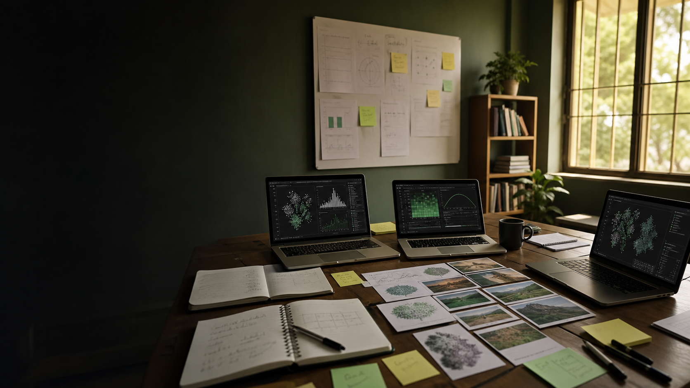

Research-first
Papers, methods, model reports, reproducibility, and careful questions.

A research-first AI/ML community for serious learners, researchers, students, and builders in Ilorin.
MLI exists to help people in and around Ilorin study machine learning deeply, reproduce research, run experiments, train and evaluate open-source models, and build systems for Nigerian and African contexts.
Beginners are welcome, but passive attendance is not the goal. Members are expected to learn actively, share progress, and contribute in practical ways.
Papers, methods, model reports, reproducibility, and careful questions.
Every cycle should leave behind notes, code, data, prompts, results, or a report.
Nigerian English, local languages, education, commerce, public information, and everyday context.
Research question: how well do open-source language models understand Nigerian and local Ilorin-relevant contexts?
MLI is for people willing to contribute through research, code, data collection, prompt design, model evaluation, documentation, infrastructure, or community coordination.
Send your name, AI/ML level, main interest area, one thing you have built or studied recently, one local-context problem you want to explore, and one way you can contribute.